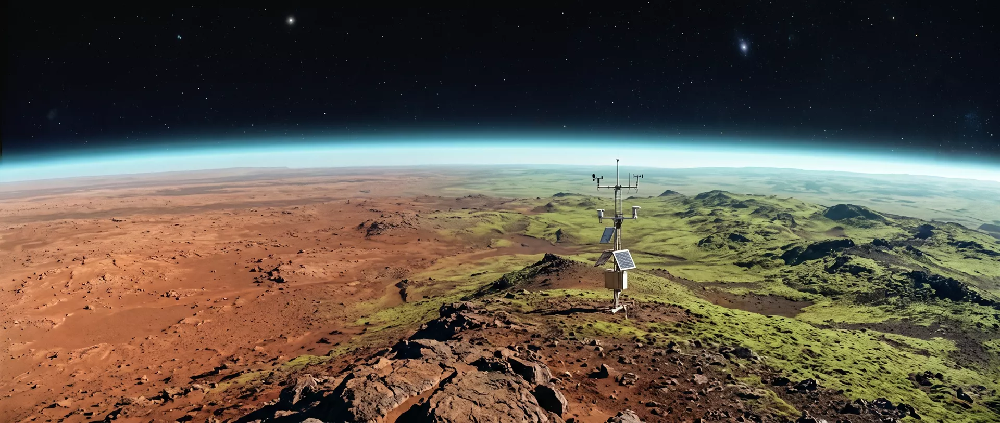

Exoplanet Restoration Initiative · Est. 2081
TERRA NOVA
Forty-two light-years out, a barren world named Aurelia is waiting. Over the next 340 years, we intend to teach it to breathe. Drag the sequence — or just scroll — and watch three centuries of planetary engineering unfold.
THE MISSION
Aurelia is not Earth’s backup. It is Earth’s proof of principle — evidence that a civilization which learned to damage a biosphere can also learn to build one. Everything below is engineering, not magic: mirrors, microbes, patience, and time measured in generations.
THE CANDIDATE
Aurelia (catalog TN-1) sits squarely in its star’s habitable zone. Cold, dry, iron-oxide red — but with every raw ingredient in place.
THE MANDATE
The Program operates under one rule written before the first probe launched: if native life is found at any stage, all machinery stops. Aurelia has been surveyed to a depth of four kilometres. It is, as far as three decades of instruments can tell, beautifully, usefully dead.
So we are free to be gardeners on a planetary scale — accountable to the people who will one day call it home.
THE HONEST TIMELINE
This is a 340-year project. No one alive at ignition will take the first open-air breath. The Program is designed like a cathedral: each generation lays courses of stone it will never see finished.
What we get in return is the oldest promise there is — a green world, handed forward.
FOUR PHASES, THREE CENTURIES
SURVEY & SEED
Orbital mappers chart every crater and aquifer. Automated foundries land in the equatorial basins and begin printing the machines that will build the machines. The first greenhouse-gas factories rise on the Meridian Plateau, exhaling on a world that has never known breath.
ATMOSPHERE IGNITION
A superconducting shield at the L1 point deflects the stellar wind while ten thousand regolith processors liberate CO₂ and nitrogen from the crust. Pressure climbs from a whisper to half a bar. For the first time, Aurelia has weather — thin, violent, and entirely ours to answer for.
HYDROSPHERE
Orbital mirrors focus dawn light onto the polar caps. Meltwater finds channels carved four billion years ago and remembers how to be a river. Basins fill. By year 240 there is a sea large enough to make its own clouds — and rain falls on rock that has waited an eon for it.
BIOGENESIS
Engineered cyanobacteria go first, then lichens, grasses, and the pine lines of the northern shore. Every gram of biomass is a solar panel that plants itself. Oxygen creeps toward 18%. In the final decade, the settlement domes open their vents — and leave them open.
Phase progress bars are live — they track the terraform sequence above.
SOL 1147 — FIRST SURFACE SURVEY
Mid-Phase 04, Survey Unit 04 climbed Ridge 7 on the Meridian Plateau and looked back the way it came. To the west, the rust Aurelia was born with. To the east, the first pioneer green — cyanobacterial mats and lichen lines, four years old. One frame, two hundred and eighty years of work.

BIOSPHERE TELEMETRY
JOIN THE PROGRAM
The Program employs 11,400 people across four orbital yards and the Meridian ground campus. Most will never leave the Solar System — Aurelia is built by telescope, by relay, and by people who think in centuries. Cohort VII opens this year.
APPLICATION — COHORT VII
Transmissions are reviewed quarterly. A reply takes time. Everything here does.